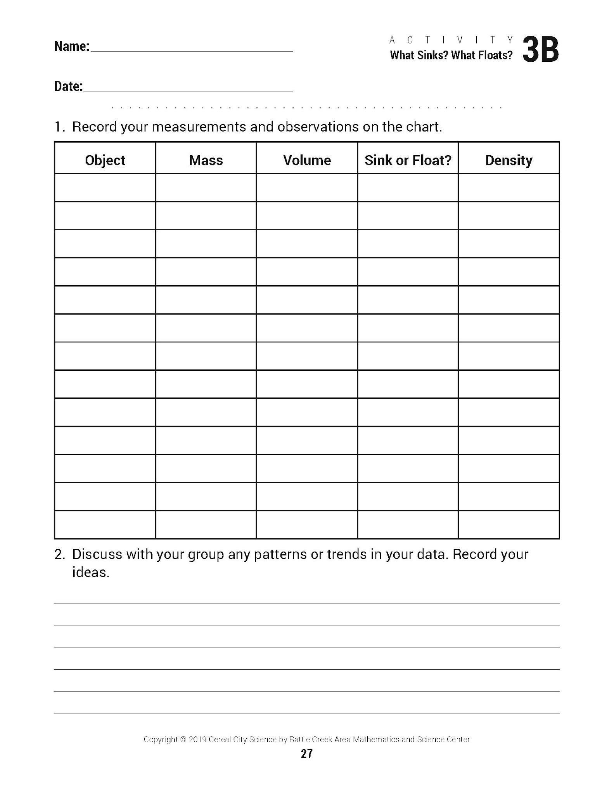

1. Record your measurements and observations on the chart.
| Object | Mass | Volume | Sink or Float? | Density |
|---|---|---|---|---|
2. Discuss with your group any patterns or trends in your data. Record your ideas.
Student journal pages 27–27 • Select a page below to read its editable text.
1. Record your measurements and observations on the chart.
| Object | Mass | Volume | Sink or Float? | Density |
|---|---|---|---|---|
2. Discuss with your group any patterns or trends in your data. Record your ideas.
This is the unmarked scanned page for checking original diagrams, exact wording, or layout. The editable HTML content is above.
